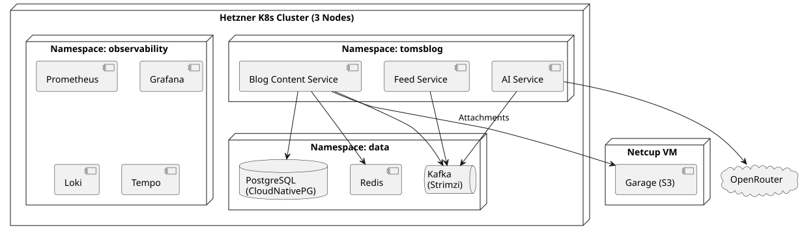

7. Verteilungssicht
1. Ziel-Deployment (Kubernetes)
Das Deployment-Diagramm zeigt die Zielumgebung auf Kubernetes (STK-007). Jeder Service wird als Container-Image mit Health-Checks bereitgestellt (SWR-010) und über Prometheus/Grafana beobachtet (SWR-011, STK-008).

2. Cluster-Provisionierung
Das Kubernetes-Cluster wird mit dem Terraform-Modul kube-hetzner und OpenTofu auf Hetzner Cloud provisioniert (SWA-017, ADR-0022).
| Parameter | Wert |
|---|---|
Distribution |
k3s (via kube-hetzner) |
Control Plane |
1x CX33 (4 vCPU, 8 GB), Nürnberg (nbg1) |
Worker Nodes |
2x CX23 (2 vCPU, 4 GB), Nürnberg (nbg1) |
Load Balancer |
LB11, Nürnberg |
Netzwerk-Verschlüsselung |
WireGuard |
Storage |
Hetzner CSI (hcloud-volumes) |
Ingress |
Traefik (k3s-Standard) |
Basis-Domain |
cluster.tomirgang.de |
Kosten |
ca. 30 EUR/Monat (1x CX33 + 2x CX23 + LB11 + Volumes + IPs) |
Die Plattform-Provisionierung (Cluster, Nodes, Basis-Operatoren) liegt in einem separaten IaC-Repository. Applikationsspezifische Kubernetes-Ressourcen (DB-Instanzen, Service-Deployments) werden aus dem Anwendungs-Repository via Flux synchronisiert (ADR-0020).
3. TLS-Terminierung und Ingress
Externer Traffic wird über den Traefik Ingress-Controller (k3s-Standard) mit automatischer TLS-Terminierung bedient (SWA-021). Zertifikate werden über cert-manager und Let’s Encrypt (ACME HTTP-01) bereitgestellt.
| Parameter | Wert |
|---|---|
Ingress-Controller |
Traefik (k3s-Standard, kube-system) |
Zertifikats-Management |
cert-manager (ClusterIssuer) |
ACME Provider |
Let’s Encrypt (Production) |
Challenge-Typ |
HTTP-01 |
Domain |
blog.tomirgang.de |
TLS Secret |
blog-content-tls (automatisch verwaltet) |
HTTP-Redirect |
Permanent Redirect (301) auf HTTPS |
Default-Redirect |
Unbekannte Domains → https://blog.tomirgang.de |
3.1. Catch-all Routing-Regeln
Neben den service-spezifischen Ingress-Ressourcen existieren zwei plattformweite Catch-all IngressRoutes mit niedriger Priorität (STK035, STK036):
| Entrypoint | Regel | Verhalten |
|---|---|---|
web (HTTP) |
|
301-Redirect auf HTTPS. ACME HTTP-01 Challenges ( |
websecure (HTTPS) |
|
302-Redirect auf |
Die Konfiguration liegt unter infra/k8s/routing/.
Voraussetzungen (IaC-Repository):
-
cert-manager Operator installiert (CRDs + Controller)
-
DNS A-Record:
blog.tomirgang.dezeigt auf Hetzner LB IP -
Port 80 am Load Balancer offen (ACME Challenge-Validierung)
4. Datenbank-Betrieb (CloudNativePG)
PostgreSQL wird über den CloudNativePG Operator als Kubernetes Custom Resource verwaltet (SWA-018, ADR-0023). Der Operator wird als Plattform-Voraussetzung im IaC-Repository installiert, die konkreten Cluster-Definitionen liegen unter infra/k8s/postgres/.
Aktuelle Konfiguration (Phase 3 / MVP):
| Parameter | Wert |
|---|---|
Instanzen |
2 (Primary + Replica, automatisches Failover) |
Storage |
10 Gi (hcloud-volumes) |
shared_buffers |
256 MB |
effective_cache_size |
512 MB |
Memory |
512 Mi Request / 1 Gi Limit |
CPU |
250m Request / 1000m Limit |
Namespace |
postgres |
Service-Endpunkt |
postgres-cluster-rw.postgres.svc.cluster.local:5432 |
5. GitOps mit Flux
Das Continuous Deployment erfolgt über Flux (ADR-0020). Flux ist im IaC-Repository (kubernetes-playground) bootstrapped und beobachtet zwei Git-Sources:
| Source | Repository | Pfad |
|---|---|---|
flux-system |
kubernetes-playground |
flux/ |
tomsblog |
tomsblog |
infra/k8s/ |
Änderungen an infra/k8s/ im tomsblog-Repository werden automatisch innerhalb von 10 Minuten auf den Cluster synchronisiert. Flux prüft dabei den Health-Status des PostgreSQL-Clusters.
6. Lokale Entwicklung
Für die lokale Entwicklung werden externe Abhängigkeiten via Docker Compose bereitgestellt:
docker compose -f infra/docker/docker-compose.yml up -dSiehe infra/docker/README.md für Details.
| Service | Port | Container |
|---|---|---|
PostgreSQL |
5432 |
tomsblog-postgres |
Redis |
6379 |
tomsblog-redis |
Kafka |
9092 |
tomsblog-kafka |
Kafka UI |
8080 |
tomsblog-kafka-ui |